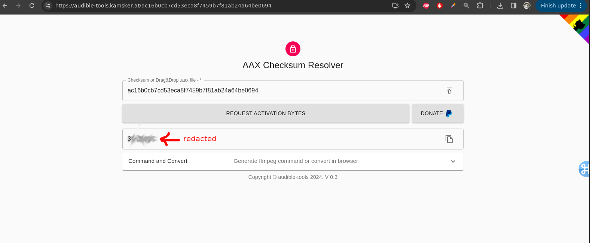

PREAMBLE
The previous instructions given here no longer work as regards the script [audible-activator.py]. In particular it appears that this script (which uses Selenium) to navigate to one of the main Amazon/Audible sites (configurable as a command line option whether it be US, UK etc) is now broken, due to what has been in all likelihood a change (after so many years) in the Amazon web sites (whether intentional as a counter-measure to that script or not cannot be said). At any rate said script was only used to extract the activation bytes which are then (manually) given as command line arguments when one invokes the [AAXtoMP3] executable.
As a reminder, the previous steps were:
- download the Audiobook you have bought. There's an option for that in the Audible site (I couldn't find one in the Amazon site itself). See this screenshot
- use the script audible-activator.py to extract an activation code from the Audible web site
- use the AAXtoMP3 program, passing it the activation code obtained in the previous step, as a command line parameter, in order to convert the proprietary *.aax format into the open *.mp3 format
{kind=link}
Current process
Now, therefore of the three-step process identified above, only the second (#2) step changes as the audible-activator.py script no longer works. Instead, I used the audible tools web site as shown in the below image: 
{kind=link}
The website is apparently able to extract the activation bytes if you upload the *.aax file or even (remarkably) just it's checksum (?).
I found this website in this Reddit discussion.
UPDATE 2025-01-28 I asked DeepSeek and I am now able to extract the proprietary Amazon Audible checksum using the *.aax file using the below incantation:
ffprobe -i filename.aax -show_format 2>&1 | grep checksum
UPDATE 2025-03-26 The above page has now been redesigned; in order to use the site at https://audible-tools.kamsker.at/ to obtain the activation bytes you have to click on the button that reads "Expert mode" — this allows you to just enter the checksum instead of uploading the entire file. Also, I found out (perhaps this was the case before I dunno) that the incantation:
./AAXtoMP3 --authcode <activation bytes> <location of the *.aax file>… has to be prefixed with sudo.